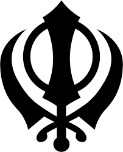
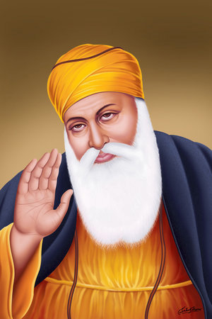
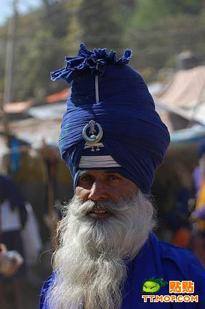
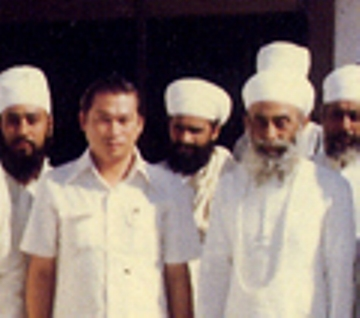
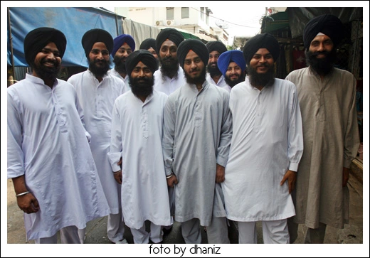
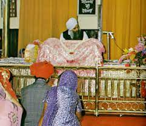
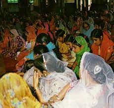

ที่มาของศาสนา
ศาสนาสิกข์มีต้นกำเนิดในภูมิภาคปัญจาบ ทางตอนเหนือของอินเดีย ราวศตวรรษที่ 15 โดยมีคุรุนานักเทพเป็นศาสดาองค์แรก ศาสนาสิกข์เกิดขึ้นจากการผสมผสานความเชื่อของศาสนาฮินดูและศาสนาอิสลามเข้าด้วยกัน โดยมีจุดมุ่งหมายเพื่อสร้างความสามัคคีและสันติสุข ศาสนาสิกข์มีคุรุทั้งหมด 10 องค์ โดยคุรุองค์สุดท้ายคือ คุรุโควินทสิงห์ ซึ่งได้สถาปนา คาลซา ปันท์ (Khalsa Panth) และแต่งตั้งให้พระมหาคัมภีร์คุรุครันถสาหิบเป็นคุรุองค์สุดท้าย
ศาสดาของศาสนา
ศาสนาซิกข์มีศาสดาทั้งหมด 10 พระองค์ มีดังนี้:
1.คุรุนานัก (Guru Nanak):ศาสดาองค์แรกและผู้ก่อตั้งศาสนาซิกข์
2.คุรุอังคัทเทพ (Guru Angad):ศาสดาองค์ที่สอง ได้ปรับปรุงอักขรวิธีคุรุมุขี
3.คุรุอมรทาส (Guru Amar Das):ศาสดาองค์ที่สาม ได้จัดให้มีวัดซิกข์ (คุรุทวาร) ตามหมู่บ้านซิกข์
4.คุรุรามทาส (Guru Ram Das):ศาสดาองค์ที่สี่ ได้สร้างเมืองศูนย์กลางของศาสนาซิกข์ที่รามทาสปุระ
5.คุรุอรชุนเทพ (Guru Arjan Dev):ศาสดาองค์ที่ห้า ได้รวบรวมคำสอนของศาสดาทั้ง 4 พระองค์เข้าไว้ในคัมภีร์คุรุครันถ์
6.คุรุหรีกรบิทสิงห์ (Guru Har Gobind):ศาสดาองค์ที่หก ได้เตรียมกองทัพขึ้นเพื่อต่อสู้กับผู้ที่รุกรานศาสนาซิกข์
7.คุรุหรีกอวินทร์ (Guru Har Krishan):ศาสดาองค์ที่เจ็ด
8.ไม่ปรากฏพระนาม
9.คุรุเตฆหบดูร์ (Guru Tegh Bahadur):ศาสดาองค์ที่เก้า
10.คุรุโกวินทสิงห์ (Guru Gobind Singh):ศาสดาองค์ที่สิบและเป็นศาสดาองค์สุดท้ายที่เป็นมนุษย์ โดยท่านได้ส่งผ่านความเป็นคุรุไปยังคัมภีร์คุรุครันถ์
สิ่งเคารพสูงสุดของศาสนา
สิ่งเคารพสูงสุดของศาสนาสิกข์คือ พระเจ้า (Waheguru) องค์เดียว ซึ่งเป็นที่มาของสรรพสิ่งและเป็นผู้สร้างสรรพสิ่ง ชาวซิกข์เชื่อว่าพระเจ้าไม่มีรูปร่าง ไม่มีเพศ และดำรงอยู่ตลอดกาล นอกจากนี้ คัมภีร์คุรุครันถ์ซาฮิบ (Guru Granth Sahib) ซึ่งเป็นคัมภีร์ศักดิ์สิทธิ์ของศาสนาซิกข์ ก็ได้รับการยกย่องและเคารพเทียบเท่ากับคุรุที่เป็นมนุษย์
องค์ประกอบของศาสนา
-องค์ประกอบของศาสนาซิกข์ประกอบด้วย
-หลักคำสอน
-คัมภีร์ศักดิ์สิทธิ์ คัมภีร์ศักดิ์สิทธิ์คือ "คุรุครันถสาหิบ"
-พิธีกรรม พิธีกรรมที่สำคัญคือพิธีปาหุล (พิธีล้างบาป)
-สัญลักษณ์ต่างๆ สัญลักษณ์ที่สำคัญคือ "ขัณฑา"
หลักธรรมที่สำคัญของศาสนา
หลักธรรมที่สำคัญของศาสนาสิกข์:
-การนับถือพระเจ้าองค์เดียว:ชาวสิกข์เชื่อในพระเจ้าเพียงองค์เดียว (Ek Onkar) และสรรเสริญคุณของพระเจ้าว่าเป็นผู้ฉลาด มีพระกรุณา และเผื่อแผ่.
-ความสามัคคีและความเท่าเทียมกันของมนุษยชาติ:ศาสนาสิกข์สอนให้ทุกคนมีความเท่าเทียมกัน โดยไม่คำนึงถึงวรรณะ เพศ หรือชาติ.
-การรับใช้ผู้อื่นโดยไม่เห็นแก่ตัว (เสวา):การช่วยเหลือผู้อื่นและทำประโยชน์แก่สังคมเป็นสิ่งสำคัญในศาสนาสิกข์.
-การทำสมาธิ (Namsimaran):การทำสมาธิและการระลึกถึงพระนามของพระเจ้าเป็นสิ่งที่ชาวสิกข์ปฏิบัติเป็นประจำ.
-การปฏิบัติตามคำสอนของคุรุ:คัมภีร์คุรุครันถ์สาหิบ (Guru Granth Sahib) เป็นคัมภีร์ศักดิ์สิทธิ์ที่รวบรวมคำสอนของคุรุ.
-การมีศีลธรรมและคุณธรรม:การมีชีวิตอย่างซื่อสัตย์ ยุติธรรม และมีเมตตา เป็นสิ่งที่ชาวสิกข์ยึดถือ.
-การต่อสู้เพื่อความยุติธรรมและความเสมอภาค:ศาสนาสิกข์มีประวัติศาสตร์ที่ยาวนานในการต่อสู้เพื่อสิทธิมนุษยชนและความยุติธรรมทางสังคม.
-การมีกางเกง 5 ประการ (ปัญจกการ์):ชาวสิกข์จะพกสิ่งของ 5 อย่างติดตัวเสมอ ได้แก่ ผมที่ไม่ถูกตัด, หวี, กำไล, กางเกงขาสั้น และกริช (หรือมีดสั้น).
หลักธรรมที่ควรปฏิบัติ
หลักธรรมที่ควรปฏิบัติของศาสนาสิกข์
-เน้นการดำเนินชีวิตตามคำสอนของคุรุ (ครู) โดยเฉพาะในคัมภีร์คุรุครันถสาหิบ (Guru Granth Sahib)
-ความเชื่อในพระเจ้าองค์เดียว
-การกระทำความดี
-การละเว้นความชั่ว
-การมีเมตตา
-การช่วยเหลือผู้อื่น
-และการแสวงหาความจริง
นอกจากนี้ยังมีการปฏิบัติที่เกี่ยวข้องกับพิธีกรรมและการใช้ชีวิตประจำวัน เช่น
-การรับพิธีปาหุล(พิธีล้างบาป)
-การปฏิบัติตาม "ก 5 ประการ" (ห้ามตัดผม, หวี, กางเกงขาสั้น, กำไลเหล็ก, กริช)
วันสำคัญทางศาสนา
วันสำคัญที่เกี่ยวข้องกับคุรุ (ศาสดา)
วันประสูติของคุรุนานัก:วันที่ 15 พฤศจิกายน เป็นวันคล้ายวันประสูติของคุรุนานัก ซึ่งเป็นคุรุองค์แรกของศาสนาซิกข์
วันประสูติของคุรุโควินท์ ซิงห์:เป็นวันคล้ายวันประสูติของคุรุโควินท์ ซิงห์ ซึ่งเป็นคุรุองค์ที่สิบและองค์สุดท้ายของศาสนาซิกข์
วันสละชีพเพื่อพิทักษ์ธรรมของคุรุอรยันเดว:วันที่ 16 มิถุนายน เป็นวันที่คุรุอรยันเดว ศาสดาองค์ที่ 5 สละชีพเพื่อรักษาศาสนา
วันรำลึกถึงคุรุเตคบาฮาเดอร์:เป็นวันที่คุรุเตคบาฮาเดอร์ ศาสดาองค์ที่ 9 สละชีพเพื่อปกป้องเสรีภาพในการนับถือศาสนา
วันสำคัญอื่นๆ:
วันไวสาขี (Baisakhi):เป็นวันเก็บเกี่ยวและเป็นวันสำคัญทางศาสนาซิกข์ โดยเฉพาะอย่างยิ่งเป็นวันที่ระลึกถึงการก่อตั้งชุมชนนักรบ Khalsa โดยคุรุโควินท์ ซิงห์
วันก่อตั้งศาสนาซิกข์:วันที่ 1 กันยายน เป็นวันปฐมปรากาศของพระมหาคัมภีร์ ศิรีคุรุครันถ์ซาฮิบ
วัน Bandi Chor Diwas:เป็นวันเฉลิมฉลองการปล่อยตัวคุรุหรโกบินท์จากคุก
วันมหา:เป็นวันที่ระลึกถึงชาวซิกข์ที่เสียชีวิตในการสู้รบกับราชวงศ์โมกุล
สัญลักษณ์ของศาสนา
สัญลักษณ์ที่สำคัญที่สุดของศาสนาซิกข์คือ ขันธา (Khanda) ซึ่งประกอบด้วยดาบสองคม (Kirpan) ล้อมรอบด้วยวงกลม (Chakkar) และมีดาบโค้งสองเล่มไขว้กัน (Khanda) สัญลักษณ์นี้เป็นตัวแทนของการรวมเป็นหนึ่งกับพระเจ้า ความสำคัญของความรู้ การกระทำ และความอุทิศตน

รูปเคารพของศาสนา
นศาสนาซิกข์ ไม่มีการบูชารูปเคารพ หรือรูปปั้นใดๆ เนื่องจากซิกข์เชื่อว่าพระเจ้า (Waheguru) ไม่มีรูปร่างและเป็นหนึ่งเดียว การบูชารูปเคารพถือเป็นสิ่งที่ไม่ถูกต้องตามหลักคำสอนของศาสนาซิกข์
นิกาย
ศาสนาซิกข์มีนิกายหลักๆ 2 นิกาย
นิกายนานักปันถี (Nanakpanthi): เป็นกลุ่มที่ยึดมั่นในคำสอนของคุรุนานัก (Guru Nanak) ซึ่งเป็นคุรุองค์แรกของศาสนาซิกข์



นิกายนิลิมเล หรือ ขาลสา (Nirmlas หรือ Khalsa): กลุ่มนี้เน้นการปฏิบัติตามคำสอนของคุรุโควินทร์สิงห์ (Guru Gobind Singh) ซึ่งเป็นคุรุองค์สุดท้ายและเป็นผู้ก่อตั้งขาลสา โดยผู้ที่อยู่ในนิกายนี้จะยึดมั่นใน "5K" หรือสัญลักษณ์ 5 ประการที่คุรุโควินทร์สิงห์กำหนด ได้แก่ การไว้ผม (Kesh), หวี (Kangha), กำไล (Kara), กางเกงขาสั้น (Kachera), และกริช (Kirpan)


